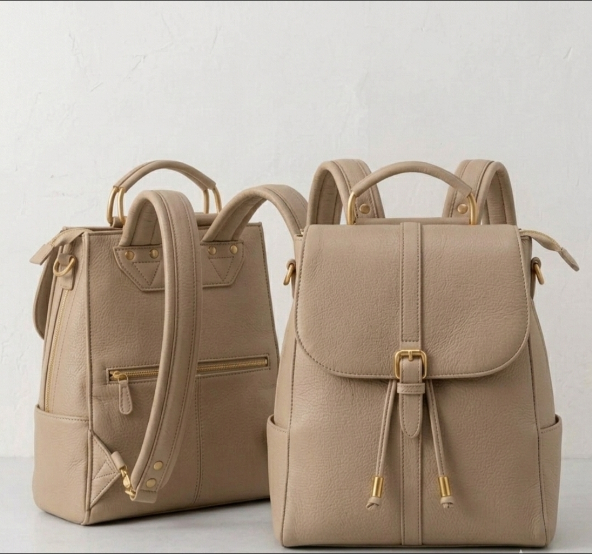
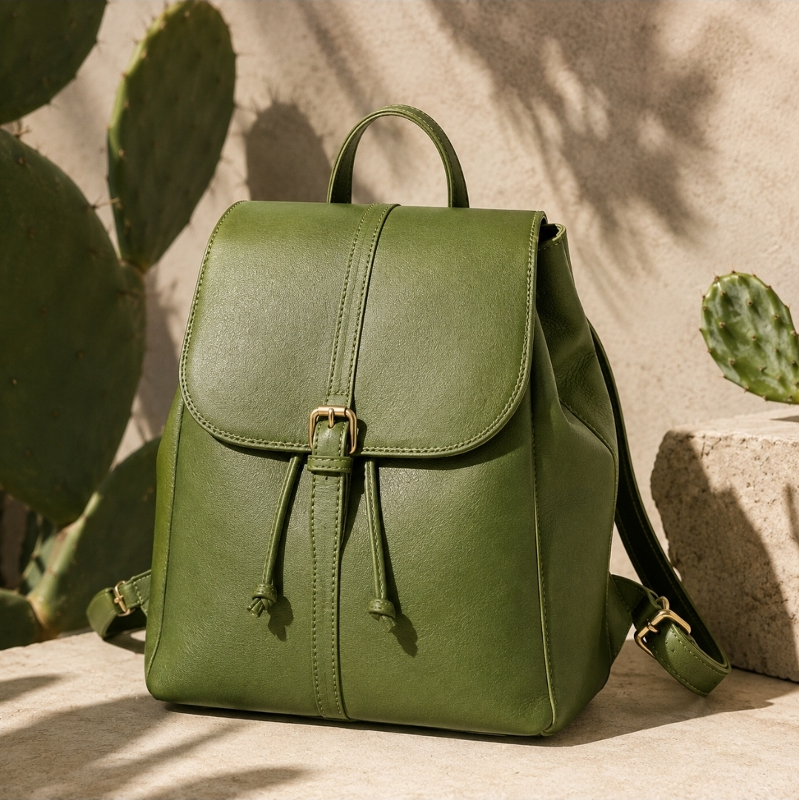
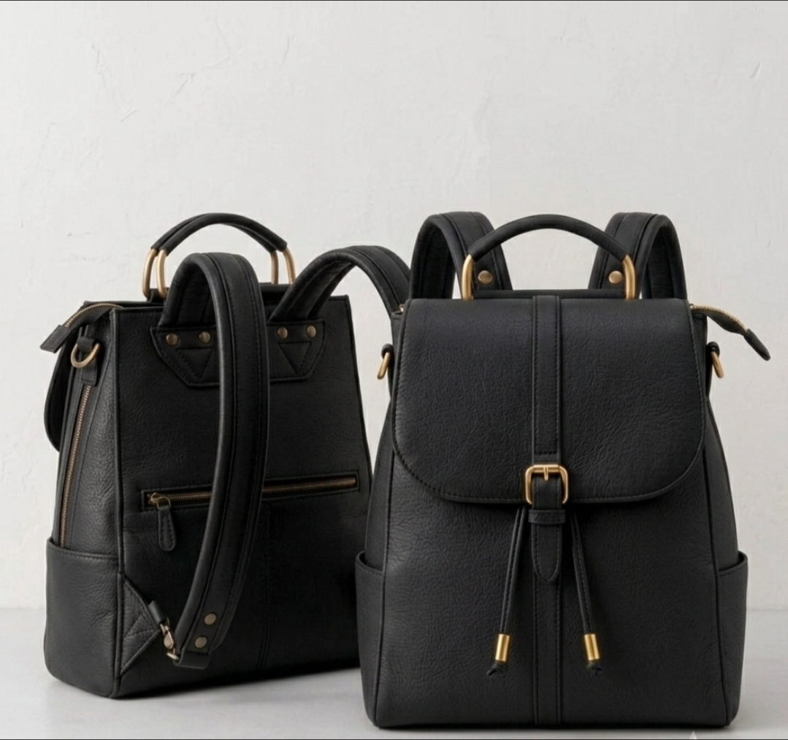
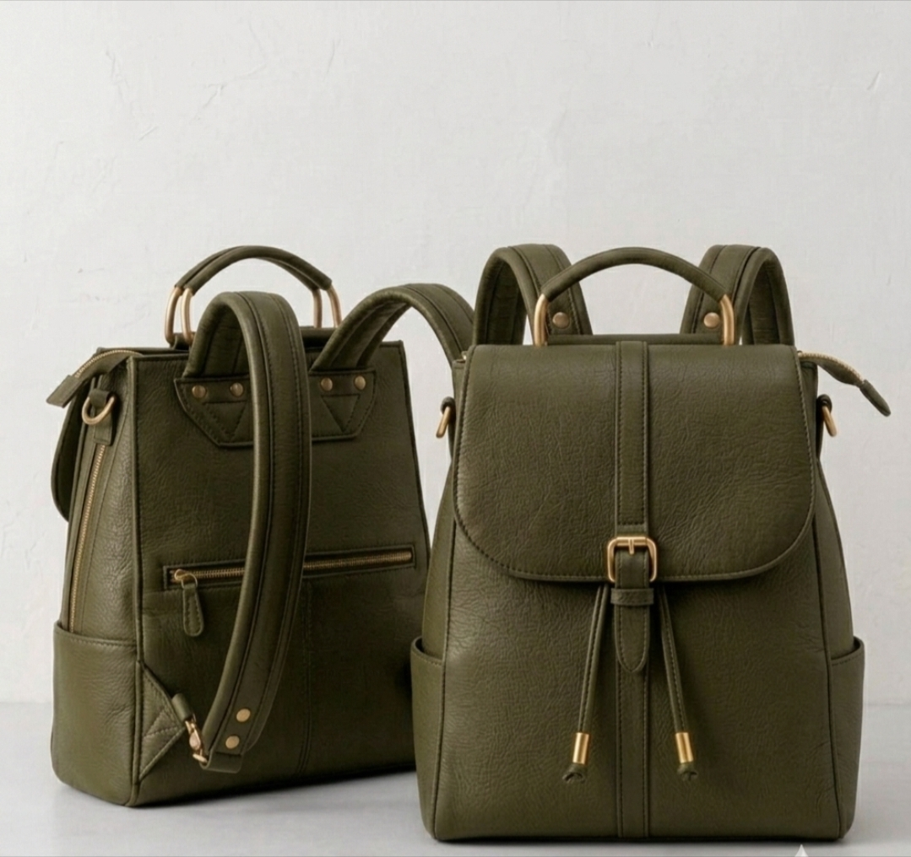
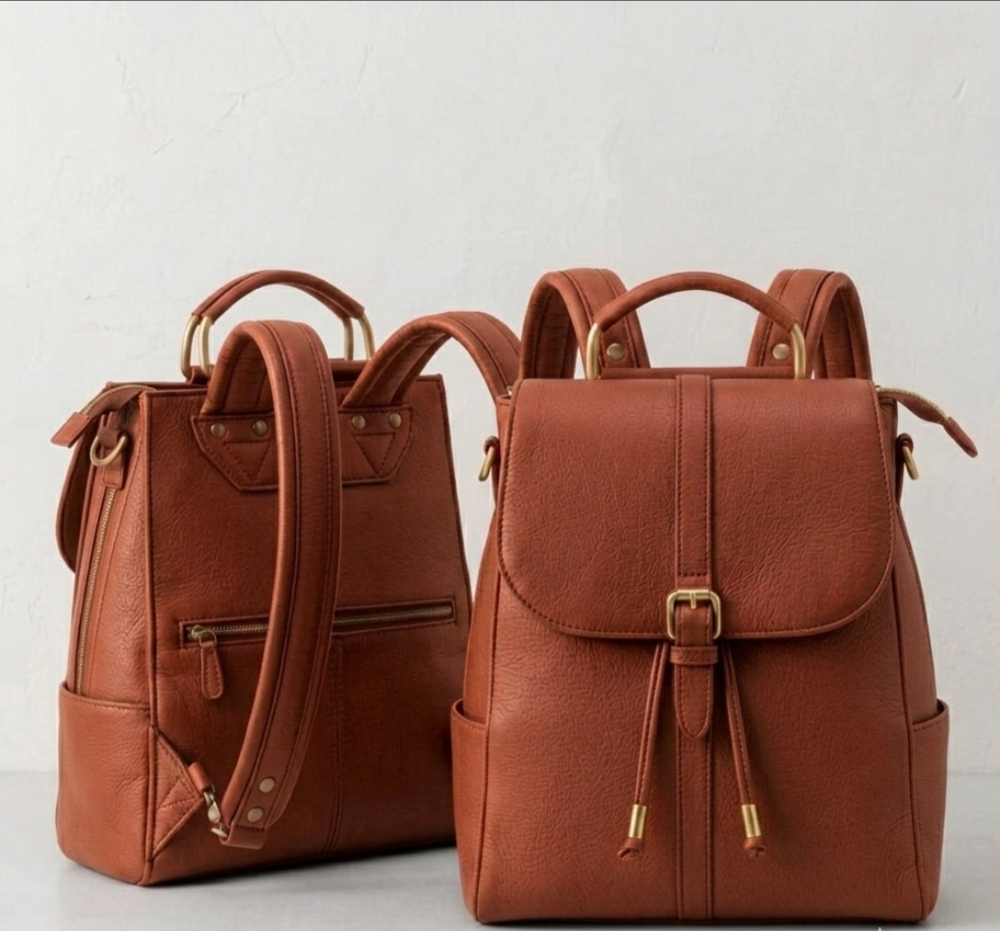

01 / ARENAARENA
Cuero de nopal · Diseñado en México
NOCHTLI / 01
Para no solo llevar el nopal en la frente.
DESCUBRE →
NOCHTLI / 02
Una planta que forma parte de nuestra historia, nuestro paisaje y nuestra identidad.
En NOCHTLI decidimos llevarlo a otro lugar.
NOCHTLI / 03
El origen de nuestra materia.
Una alternativa de origen vegetal con identidad.
El resultado que llevas contigo.
PROPIEDADES DEL MATERIAL
Material de origen vegetal que no utiliza componentes de origen animal.
El nopal es una planta resistente a la sequía y requiere poca agua para su cultivo.
El material de Desserto se desarrolla sin PVC ni ftalatos.
Presenta una textura, flexibilidad y suavidad similares a las del cuero convencional.
Presenta resistencia frente a abrasión, fricción, desgarro y tensión.
El material puede alcanzar una vida útil estimada de hasta aproximadamente 10 años, dependiendo de las condiciones de uso.
MATERIAL DE REFERENCIA
Las características del material se basan en la información proporcionada por Desserto® , desarrollador de materiales de origen vegetal a base de nopal.NOCHTLI / 04

01 / ARENACuero de nopal · Diseñado en México

02 / NEGRACuero de nopal · Diseñado en México

03 / OLIVACuero de nopal · Diseñado en México

04 / TERRACOTACuero de nopal · Diseñado en México
NOCHTLI / 01
Una mochila inspirada en los tonos naturales de la tierra mexicana. Una pieza que busca combinar funcionalidad, identidad y diseño contemporáneo.
NOCHTLI / 02
URBANA · SOBRIA · VERSÁTIL
Una interpretación sobria y contemporánea de NOCHTLI, pensada para acompañarte todos los días.
NOCHTLI / 03
NATURAL · ORGÁNICA · VERSÁTIL
Una mochila inspirada en la vegetación y los paisajes naturales. Su tono oliva conecta con el origen vegetal de NOCHTLI, combinando carácter, funcionalidad y diseño contemporáneo.
NOCHTLI / 04
CÁLIDA · AUTÉNTICA · CONTEMPORÁNEA
Una pieza inspirada en los tonos cálidos de la tierra mexicana. Terracota transforma esa conexión con el paisaje en una silueta contemporánea, pensada para acompañarte con carácter.
NOCHTLI / 05
Lleva el nopal contigo.
VER COLECCIÓN →